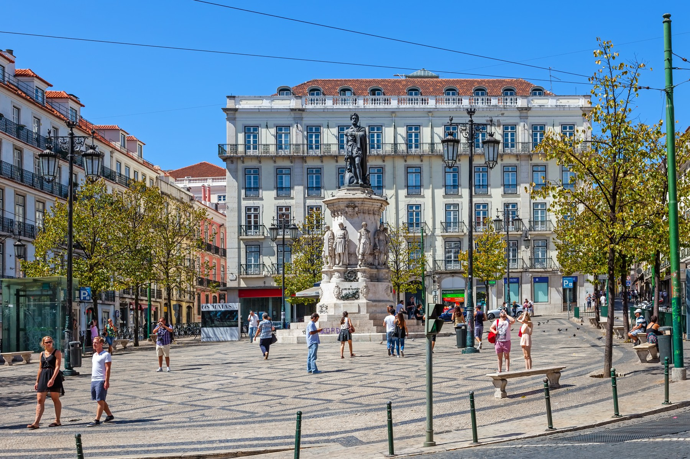
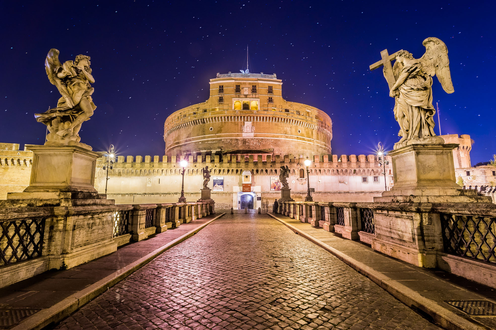

Manuel Sousa
Programmer
After 3 years as a professional cook, I wanted to merge that with programming skills and attended Le Wagon. My mission: learn something new every day.
Check it outMy Favorite Cities
Lisbon |
|
|  |
Lisbon is Portugal’s hilly, coastal capital city. From imposing São Jorge Castle, the view encompasses the old city’s pastel-colored buildings, Tagus Estuary and Ponte 25 de Abril suspension bridge. Nearby, the National Azulejo Museum displays 5 centuries of decorative ceramic tiles. Just outside Lisbon is a string of Atlantic beaches, from Cascais to Estoril. |
Rome |
|
|  |
Rome, Italy’s capital, is a sprawling, cosmopolitan city with nearly 3,000 years of globally influential art, architecture and culture on display. Ancient ruins such as the Forum and the Colosseum evoke the power of the former Roman Empire. Vatican City, headquarters of the Roman Catholic Church, has St. Peter’s Basilica and the Vatican Museums, which house masterpieces such as Michelangelo’s Sistine Chapel frescoes. |
Krakow |
|

|
Kraków, a southern Poland city near the border of the Czech Republic, is known for its well-preserved medieval core and Jewish quarter. Its old town – ringed by Planty Park and remnants of the city’s medieval walls – is centered on the stately, expansive Rynek Glówny (market square). This plaza is the site of the Cloth Hall, a Renaissance-era trading outpost, and St. Mary’s Basilica, a 14th-century Gothic church. |